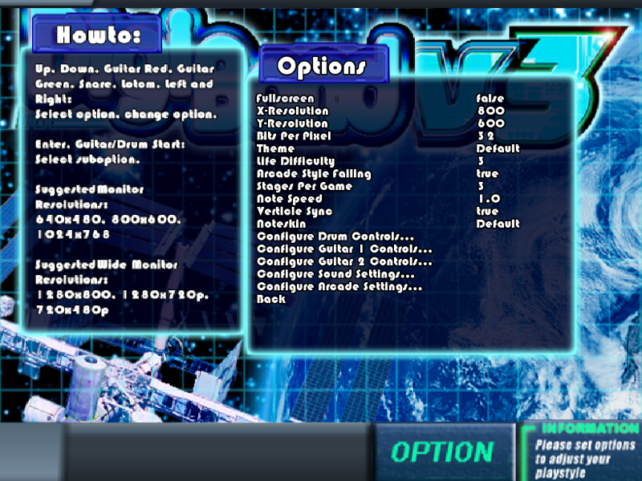
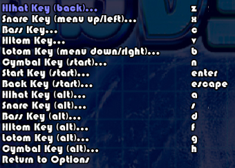
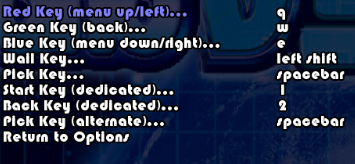
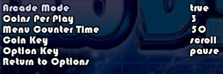

|  |
In the main options page you can adjust graphical options and
a few gameplay options. Life difficulty adjust how much life is taking away from a poor grade.
Arcade style failing if set to true fails when you have no life left, if set to false DigiBand
will allow you to continue even if your life has dropped to zero. Stages per game adjusts how
many stages must be complete before the end of the game, setting this to zero will start an
endless game.
DigiBand is capable of different looks and styles. Pressing
left or right on theme will navigate through the detected themes by DigiBand. The theme
is composed of everything you see except the noteskin. Navigating through the noteskins will
do the same, noteskins are composed of the notes, track, lifebar and scorebar. DigiBand installs
two different noteskins, the default theme is a thick note style, and the second is a thinner slim
note style, both are prefered by two different groups of professionals.
|
|  |
In this screen you will set the controls for the drums.
They are in order as the display on the screen during gameplay from left to right, keep this
in mind when mapping your keys. To map the key simple press drum start or return on the key
you wish to map and then press the desired button or key you wish to map it to.
You will notice that there are alternate keys. These keys are
for people who use keyboards and need the ability to do drumrolls. Usually on the keyboard they
are mapped to keys right next to the previous so two fingers can hit them both alternately.
|
|
|
The guitar configuration is similar to the drum configuration. The
only difference is that the guitar has only an alt pick. This is used for controllers that have
picks with 2 buttons, one for strum up and strum down. If you have one of these controllers, you
will want to make sure you set both pick up and down. It's okay to do so anyways if it is
not a controller with 2 different buttons for the pick.
|
 |
|
|
Here in the sound options, you can change the volume of any drums
guitars (1 and 2, not guitar players 1 and 2), and the anything that is playing in the background.
Some people don't find it difficult to play while hearing themselves playing and generally turn
the drum and guitar down.
|
|
All of these options except "Option Key" require arcade mode to be set to true. Coins per play
will require the coin key to be pressed that many times before the player can press start to begin
play at the title screen. This is intended for individuals who wish to put DigiBand into a kiosk
cabinent for arcade use. Please do not illigally install DigiBand into unauthorized cabinents.
The menu counter time is the amount of time you will have to choose options and songs once the
game has begun. When the timer reaches zero the game will progress to the next screen.
|
 |
|